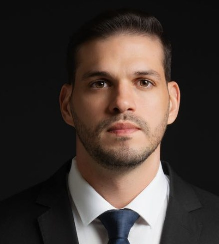

Direito Civil
Contratos, indenizações, cobranças, responsabilidade civil e questões do dia a dia.
Atendimento jurídico com análise cuidadosa de cada caso, linguagem clara e acompanhamento próximo do começo ao fim.

O Jhansen Dornelas Advogados atua em João Pessoa com um compromisso simples: ouvir com atenção, explicar com clareza e conduzir cada processo com responsabilidade.
Nosso trabalho começa entendendo a sua situação por inteiro. Só depois indicamos o caminho jurídico mais adequado, sempre com transparência sobre etapas, prazos e possibilidades.
Atuação consultiva e contenciosa. Se a sua dúvida não está aqui, fale com o escritório que indicamos o melhor caminho.
Contratos, indenizações, cobranças, responsabilidade civil e questões do dia a dia.
Verbas rescisórias, horas extras, vínculo de emprego e orientação a empresas.
Aposentadorias, benefícios do INSS, revisões e planejamento previdenciário.
Divórcio, pensão alimentícia, guarda, inventário e planejamento sucessório.
Cobranças indevidas, negativação, problemas com bancos, planos e serviços.
Contratos, consultoria preventiva e assessoria jurídica para pequenas e médias empresas.
A confiança de quem já foi atendido pelo escritório, registrada publicamente no perfil do Google.
Ver no GoogleAdvogado à frente do escritório, atua em João Pessoa com foco em um atendimento técnico, humano e transparente.
Acredita que o cliente precisa entender o próprio caso. Por isso, cada atendimento começa com uma escuta atenta e termina com um plano claro do que vem pela frente.
OAB/PB Nº 00.000Você agenda uma consulta pelo WhatsApp, presencial ou online.
Ouvimos a sua situação e analisamos os documentos com atenção.
Explicamos as possibilidades, as etapas e os prazos com clareza.
Você recebe atualizações sobre cada movimentação do seu caso.
Sim. A consulta pode ser feita por videochamada, e os documentos podem ser enviados digitalmente. O escritório atende clientes de João Pessoa e de outras cidades.
Documento de identificação e tudo o que tiver relação com o seu caso: contratos, mensagens, comprovantes, carteira de trabalho ou cartas do INSS, por exemplo. Se tiver dúvida, pergunte no agendamento.
O escritório informa cada movimentação relevante e você pode tirar dúvidas pelo WhatsApp, sempre com sigilo.
Na Rua João Teixeira de Carvalho, 275, no bairro Pedro Gondim, em João Pessoa.
Conte brevemente a sua situação. O escritório retorna para marcar o melhor horário.